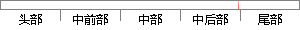

值此论文完稿之际，再次向王老师和冯老师表示崇高的敬意和衷心的感谢。
片段位置图

相似结果|
相似片段 1：细心的指导，倾注了大量的心血。两年多来，王老师不仅在学业上给我以精心指导，同时还在思想、生活上给我以无微不至的关怀，在此，谨向王老师表示崇高的敬意和衷心的感谓}!同时，我要感谢邹长亮老师对我论文的关怀
相似片段 2：受益匪浅。这些宝贵的精神财富将使我终身受益，并直接使我的工作态度上了一个新的台阶，从而为能够在工作中取得出色成绩打下了坚实的基础，提供了必要的保证。值此学位论文完成之际，谨向陈老师表示崇高的敬意和衷心
相似片段 3：，诲人不倦的高尚师德，对我产生了深远的影响。研究生三年期间，李老师在生活上学习上均给与了很大的帮助，课题选择，论文初审，准备答辩，老师都给与了耐心细致专业的指导。在此，谨向导师表示崇高的敬意和衷心的感谢
|
※ 片段修改建议 ※
近似词参考：- 完稿：脱稿
- 老师：教员 先生
- 表示：暗示 默示 示意 透露表现 表现
- 崇高：高尚 高贵
- 感谢：感激 谢谢
系统自动生成语句：值此论文脱稿之际，再次向王教员和冯教员暗示高尚的敬意和衷心的感激。
注：本片段修改建议为系统自动生成，仅供参考。